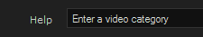
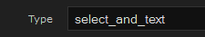
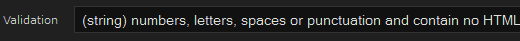
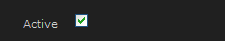

Thank you for purchasing and using ProJam5.
If you are installing this template yourself please follow the instructions below using suitable file editing software such as BBEdit or alternatively use the Template Editor in your Jamroom Admin Tools.
If you prefer not to install yourself we have a guaranteed installation service available, visit us for more info: http://www.jamroom.net
Installation:
1. Unzip the file on your hard drive and using a suitable FTP software simply upload the jrProJam and jrProJamLight folders to the skins directory on your server.
2. To activate the ProJam Skin for your Jamroom5 Install, log-in as admin and click the Skins tab, then click the jrProJam or jrProJamLight menu entry and on the Info tab check the set as active skin checkbox and finally click the save button.
Site branding:
Simply edit or replace the following files to change the branding of your site.
- Main Header Logo (site wide | width: 375px height: 80px) - skins/jrProJam/img/logo.png
- Privacy Policy - skins/jrProJam/privacy_policy.tpl
- Terms Of Service - skins/jrProJam/terms_of_service.tpl
- Contact Us - skins/jrProJam/contact_us.tpl
- Footer Information - skins/jrProJam/footer.tpl
Light or Dark layout.
- This option use to be found in the ProJam Skin Settings for Jamroom 4, however... with Jamroom 5, site owners have the ability to modify skin templates, images and language strings via the control panel so it was decided to create separate ProJam Dark and Light template sets for Jamroom5. To use the dark or light version, simply activate the ProJam or ProJamLight skin like you did in step 2 of the Installation instructions above.
PJ5 Settings (skins/jrProJam/config.php file):
ProJam5 has many configuration settings, as admin you will see a link in the ACP drop down menu which links to the PJ5 Skin Settings page in your admin.
Note: Please take your time to view the PJ5 Settings and descriptions.
House Radio:
As standard the House Radio is DISABLED in the PJ5 Settings. If you haven't already done so, create a new Admin Audio Playlist by clicking the Add To Playlist button next to the audio tracks you want on your House Radio and make a note of the Playlist Name. After you've created your playlist, go to your PJ5 Settings, ENABLE the Show House Radio feature and enter the Playlist Name.
Note: You must have the jrPlaylist module installed and activated.
House Channel:
As standard the House Channel is DISABLED in the PJ2 Settings. If you haven't already done so, create a new Admin Video Playlist by clicking the Add To Playlist button next to the video tracks you want on your House Channel and make a note of the Playlist Name. After you've created your playlist, go to your PJ2 Settings, ENABLE the Show House Channel feature and enter the Playlist Name.
Note: You must have the jrPlaylist module installed and activated.
Admin Blogs and Site News:
ProJam5 includes news and informational pages which are based on the Jamroom blog system, these pages use category names so that the blogs are routed to the correct pages in the template.
When you create blogs for the Index Site Tabs, Welcome Section and News Pages, you need to set the correct category for the blogs to show up in the correct place.
Welcome Section & Index Site News, Site Blog and About Tabs:
- About Us Tab Category - about
- Site Blog Tab Category - blog
- Site News Tab Category - news
- Welcome Box Category - welcome
News Pages:
- Latest News Category - latest
- Featured News Category - featured
- Exclusive News Category - exclusive
Modify or create a new blog and in the Blog Category make sure to enter one of the above categories.
Note: If you do not use the above categories, the blog entries will NOT be shown in the correct place.
Image - Slider:
The Images shown in the Image Slider on the Home Page are controlled by PJ5 Settings. You can manually select which profiles to show in the slider by adding the Profile ID's, separated by a comma ie. 1,2,3 etc., in the Featured Artists field of the PJ5 Settings. or leave the setting blank, which is the default setting, to show random profiles.
Site Ads/Google Ads:
Google Ads have been configured throughout the templates, your Google Ads code for ALL ads needs to be set in PJ5 Settings.
If you prefer to use the two ad fields, set the Google Ads to NO in PJ5 Settings. Check the Site Ads check box to hide all ads on the site.
Note: As of now, the Jamroom 5 does NOT have an Ad Manager Module.
Video Category:
The JR5 jrVideo module by default is not setup with a video category. If you would like to add a video category you'll need to add the field to the Video Create/Modify form by clicking the Form Designer button when creating/modifying a video.
When your in the form designer section, set the New Name Field to video_category
The next section is where you setup the form field. Set the following fields to the values below:





After setting those fields, click the Save Changes button. Your Video Create form should now have a category field and the jrProJam templates are already setup with the correct variable.
Note: Make sure to update the Video modify and Video create album with same fields.
The final step is to active the video categories by checking the Video Categories checkbox in your skin settings.
Language Files:
ProJam5 is configured for Jamroom's multilingual system which allows the site language to be quickly changed by clicking on the flags in the welcome bar. If you wish to use an additional language for your site you can do so by translating from one of the existing language files which are located in the "skins/jrProJam/lang/" directory. Once you have completed the translation, save the file as xx-XX.php with "xx" being your countries suffix in lower case and XX being your countries suffix in upper case. You will then need to edit the file skins/jrProJam/header.tpl and place the following line in the "Language Flags" section - either above or below the existing calls:
Again changing xx-XX and xx.png to your countries suffix in lower case and upper case. Also change LANGUAGE to the new language, ie. Spanish etc...
Requirements:
Required:- Jamroom Core v5.x.x
- jrAction Module v1.x.x
- jrAudio Module v1.x.x
- jrVideo Module v1.x.x
- jrPlaylist Module v1.x.x
- jrBlog Module v1.x.x
- jrPage Module v1.x.x
- jrGallery Module v1.x.x
- jrEvent Module v1.x.x
- jrSoundCloud Module v1.x.x
- jrVimeo Module v1.x.x
- jrYouTube Module v1.x.x
Support:
If you have any support questions or require assistance please use the Support Center.
Thanks Again For Your Purchase And Your Support!.
- The Jamroom Network Team
Copyright ©2013 Jamroom Network Design
Jamroom is Copyright ©2003 TallDude Networks, all rights reserved.